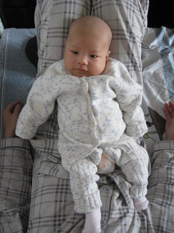
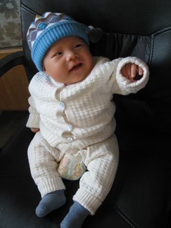
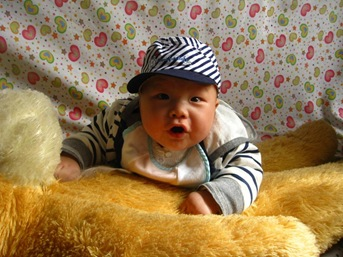
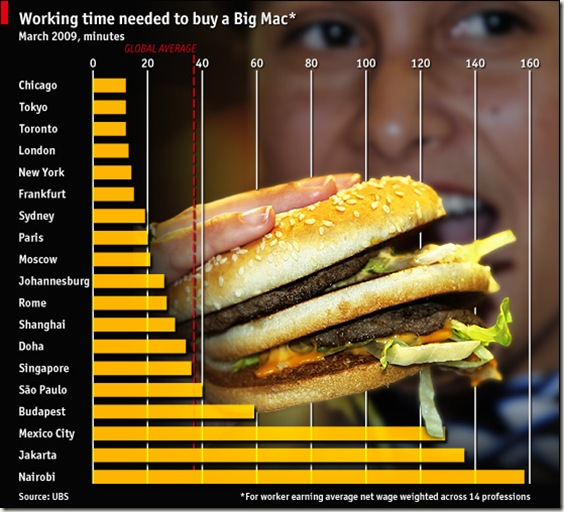
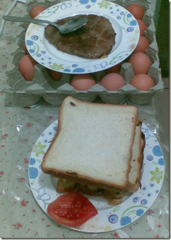

勇敢的心
待到虎头从铁打的摇篮中长成，
勇敢的心像从前一样，
去拜访远大路的小小男子汉。
他们是
三岁的棒棒，两岁的冷不丁，七个月的瀚瀚。
周末跟Li带虎头去海淀的远大路，走访一些朋友和他们家的小孩。我问虎头：去跟一群硬汉玩，怎么还穿小熊维尼的衣服啊？
虎头说，就这套出客了。
2
我不知道虎头的眼中看到的是什么，对我来说，多接触些别的小孩子，有助于我理解自己的孩子，就跟我自己多接触些他人，有助于理解自己一样。
公车上书201107-08
除了刘未鹏的《暗时间》，这些日子读的纸书流水帐：
1. 《美国宪政历程—影响美国的25个司法大案》（任东来等，中国法制，2004）
这书在朋友的桌上发了老久，。实在看不下去了，说，你还不看，我先帮你看掉吧。
于是，这本意外的书被我带上了地铁，还真有读到激动处。最后评价：如果有机会见着，就要把它买下来（每个案例都附有英文链接，方便进一步查找）。
关键词：美国，美国历史，美国宪法，大法官，律师，民权，三权分立
2. 《笑谈大先生—七讲鲁迅》（陈丹青，广西师大，2011）
这本跟以下的书都是Hazel送给我们的，也都她做的书。那就看了。之前老分不清陈丹青和已故的陈逸飞。这下总算了解一位了，我说的是通过这本书了解陈丹青而不是鲁迅。
3.《问道：十二种追逐梦想的人生》（贾樟柯等，广西师大，2011）
贾樟柯的序言写得好，抵这本书的四分之一强：
http://book.douban.com/reading/13715891/
书的主角十二位，来自各个行业，讲他们年轻时的故事，耳熟的，就是潘石屹、王克勤、周云蓬、罗永浩，开始有印象的有赵中、徐冰。
4.《异兽图志：西洋山海经》（科维主编，刘钧豪译，金城，2010）
一本讲世界范围内异兽的书，由于有若干血腥图片，不敢放家里让虎头看到，锁公司了。
雷人的老虎
上些周晚上，窗外电闪雷鸣，虎头乐得跟着手舞足蹈，做偈曰：上天地下，唯我独尊，从今以后，请叫我雷老虎。
2
跟着虎头一起听音乐。我当然有信息优势，因为私下底我还在读一本书叫Music Theory For Dummy（《音乐傻瓜书》）。但见我随着不同的曲子试图捕捉些愉悦、兴奋、天真等情绪，并不时看看与虎头是不是有共鸣。但看虎头还是忙着啃他的玩具。
有论者以为，我还是用左脑听音乐；用右脑听，就会把音乐当成一种背景。好吧。
3
从小听一个故事，富含教育意义。说一个人拜师学艺，他师傅也不教他什么招式，只是每天让他抱一只小猪上楼。这人当然不解，抱只小猪上楼也太容易啦。故事的寓意在后面，那只小猪一天天长大，当这哥们最后抱着三百斤的小猪上楼而气不喘腿不软时，才泪汪汪地明白了师傅教导的深意。
我把这故事讲给Li听。因为虎头从七斤到现在的二十来斤，Li这么一路抱过来（抱过去），一定臂力见长（惹不起啊）。
4
昨天在家里掏出一盒豪华型的国际象棋，接着上网查了下规则，忍忍还是把它放回去了。又掏出一盒普通的中国象棋，大喜，跟Li说，我们可以一起下棋啦。
没找到棋盘。我找到一副旧的世界地图，把太平洋那块剪了出来，又找出一只铅笔，一根直尺（怎么没有T型尺？），打开电脑，调出Excel，算好尺寸，然后趴在地上，认认真真地画个棋盘，虎头就在我身边爬来爬去，不时干扰我的施工进度。
妈妈在一旁看着，说以前在家里，爸爸他们下棋，画个棋盘都蹭蹭蹭的，哪还用尺子。
我说，妈，你儿子是工程师。
未鹏的硬功夫
1
7月23号下午参加了一次beijing open party，主要是去听刘未鹏《暗时间》的新书发布，然后见见其他老朋友。跟未鹏第一次见面，是2009年上半年的一次bop，那时跟一群朋友整《我是一只IT小小鸟》。两年了，这次的会场，还见到另外两只小小鸟，张凯峰和宋劲杉，还有当时的编辑周筠老师，她现在也是《暗时间》的编辑。
在现场买了一本《暗时间》。指着扉页跟未鹏说，最羡慕的，就这一页了。盖未鹏的女儿出生不久，这本书就是献给他女儿刘鸾的。
2
《暗时间》是未鹏博客(http://mindhacks.cn/)的一个精选集，主题就是“思维改变生活”。未鹏在南京大学念数学和计算机，09年毕业，来北京微软亚洲研究院做程序员。这次bop未鹏算是第一次在公开场合正式露面，而他本科时就以知名博客作者的身份被人追捧（这是追查历史档案得知的；未鹏2003年开始写技术博客，那时我还是文科生）。未鹏84年出生。
未鹏的博客，除了C++、算法等计算机的题目，就是他关于心理学、脑神经科学等的阅读笔记和思考（《暗时间》里文章的主体），数量不多，篇幅都很长，两个月甚至更长时间一篇的节奏。我是更多通过博客了解未鹏，有时候犯懒，碰到长文，草草浏览下就收藏掉.现在有了纸书，人也不由自主慢下来，这是让我了解朋友学习朋友的极好契机。
3
未鹏有一项成功的思维实验，让我羡慕不已，是对生活中的边角料时间（“暗时间”）的利用。他说玩才需要大块的时间，思考和阅读只需要大量的小块时间。所以作为桌上足球、台球以及电子游戏的高手，未鹏会一整天一整天地玩，但阅读和思考，就给利用上“走路、买菜、洗脸洗手、坐公车、逛街、出游、吃饭、睡觉”等的“暗时间”，而且也成果斐然。——这里也需要说一下，免得读者有误区。未鹏的意思，不是说只有在小块的时间里才有这样的富有成效的阅读与思考，他当然也倾向于能有大块大块的连续时间思考阅读；只是生活里工作中，这样的时间是越来越奢侈了，那只有充分利用好这大量的边角料时间。而且，重要的不是投入的时间，而是时间与效率的乘积，这样大量的小块时间，也能有可观的成绩。
利用小块时间，重要的一项修炼是大脑（CPU）的切换时间要快，这是未鹏的真正硬功夫。如果说一定要先泡杯茶才能读下书，那你的大量时间都将花在启动上面。
4
未鹏在会场有个演讲（是那天bop人气最旺的一场），说他学习与写博客的经历，起到他直接跟C++之父Bjarne Stroustrup沟通的故事。这是未鹏的故事里值得学习的地方。学习未鹏，不是把他的博客他的书翻熟，而是模仿他的精神，直接跟高手对话：这可以是给业界大牛写email，也可以是在英文社区读帖回帖以及直接阅读英文经典。如果只停留在未鹏用中文表达出来的东西，那这读者就输了。未鹏的书里提到大量有趣的书。当他提了好几遍波利亚的数学书how to solve it时，我说，那我也要赶紧去翻翻了。
5
未鹏书的最后一章，还提到用贝叶斯方法解释回归模型中最小二乘法的直观含义。这很有意思，以后要跟进一下。作为非科班出身的统计分析工作者，我对这些能提供直观含义的解释都非常感兴趣。
平趟
又搁了一段时间没更新。除了最近有些事，还就是每天都在看动车事故的报导转贴，铺天盖地地过来，心下就郁积了很多话想说却无从开始。无从开始，索性就沉默。
沉默了，一些情绪都丢掉了。今天周末，打开电脑，却也回避不了这个话题。现在对这事故还有报道，密度就小很多。印象中，从2008年开始，每一个敏感的国人都经历了大量类似事故的冲击。动车事故，不是最惨的，也不是最丑陋的，不是第一个，恐怕也不会是最后一个，但迄今为止，它给人的触动却是最大的，人们的底线受不了这么一次又一次的冲击。
有清醒的人提到，动车出事前不久，京珠高速有客车烧死41人却无人问津，所以媒体和群众对动车的关注是选择性的。这个批评是对的。问题的关键在于，动车事故，触及的是更有话语权的一大群体的底线。做一个非常粗而且残酷的划分，京珠高速客车的用户，以农民兄弟为主，而动车的用户，以所谓更有知识的那群人为主。农民兄弟从来不会发出自己的声音，而对知识（信息优势…）阶层的一个诟病就是，他们也从来不会为农民代言。现在，原因一目了然，在我们这个神奇的国度，他们自身难保。他们终于愤怒了，至少在口头上愤怒了。
这是个进步。不能或者不敢捍卫自己权利的，大概也不会明白这权利对其他群体的意义。谈到改革，有些朋友很悲观，他们动辄谈到本质或根本的东西。不需要走那么远，事情也能变得稍微舒服一些。这一点点的进步，不可能消灭所有的混蛋，但能让一些混蛋稍微不那么嚣张一些。以前批评资本主义“虚伪”以及披着“温情脉脉的面纱”。现在在我看来，虚伪的温情脉脉的面纱，简直就是一种幸福。让我觉得恐怖的事情是，像铁道部之类的混蛋，根本就不屑于披着什么温情脉脉的面纱，直接平趟（ping tang）就是。小时候看阿凡提智斗虚伪恶毒的巴依老爷，非常带劲，是因为巴依老爷最后也不能够平趟，秀才不必每次都遇到兵，贫穷智慧的阿凡提总有取胜的机会。对付日本鬼子，对付国民党反动派，有时候，一些有理有节有据的行动和策略尚能成功，给无数仁人志士抛头颅洒热血的动力。在一个盛行赤裸裸的平趟世界里，你真不能责备年轻人为什么丧失了行动的勇气（所以更让人振奋的，就是还真有一部分年轻人有行动的勇气）。
懒得批评铁道部之类的混蛋了。即使批判得入木三分，也不是什么荣誉，因为可以平趟的铁道部之流，真的就跟真的猛士一般，向来不屑隐藏什么。你上街随访一个买菜的大妈，她也能给你头头是道地说出铁道部的问题在哪。在中国，看出问题来，看出所谓深刻的本质的问题来，是太容易了，它们没有面纱，它们就是空气，时刻笼罩着我们。什么都是线索，什么都可以直达所谓本质。举国的明白人，却鲜有行动的勇气，这是可悲可怕的事情，因为总有一股可以平淌的力量，可以肆意嘲讽你的智商。
好吧，硬转一下。我是谨慎的乐观主义者，不可以消灭所有的混蛋，但让混蛋不那么嚣张，有生之年，可以期待。
iPad2在途中
1
一个月前我问Li：
假设一台iPad卖5千块钱，两种可能，你选择哪一种？
第一，你多出来5千块；
第二，你多出来一台iPad。
第一种，Li的回答跟我一样。我们都认为iPad不值那个价，我们不会拿5千买这活计。故事继续。
刚赢了一台iPad2（淡定；猛击这里）。又问Li,
假设一台iPad卖5千块。现在我们多出来了一台iPad，你愿意把它卖掉换成5千现金吗？
不愿意。Li的回答跟我一样。问虎头：爸爸妈妈的偏好是一致的吗？
2
我要把这台iPad送给虎头，虎头又决定把它送给妈妈。Li说，一台小小的机器，让我们一家人都很开心。
3
作为诺基亚6300移动通讯终端的持有者，我强烈感觉到要换一台iPhone或其他智能手机的压力。不是为了表面上跟iPad对应。4月份在宾州出差，一群二十几岁、三十几岁和四十几岁的新晋老爸凑在一起，节目就是掏出手机秀小婴儿的照片，哥我也就掏出6300，硬是在四寸丛林中用2英寸的屏幕展现出了虎头的雄姿。
说白了，我需要的不是一台大屏手机，我需要的是一台可以秀虎头照片的大屏移动设备。
4
当然，要问起5千现金和一台iPhone，我又会毫不犹豫选择第一种。我是历届年会阳光普照大奖的获得者，但四月份我拉斯维加入手一台Kindle，这次从加州一家公司赢台iPad，让我有些守株待兔的神气。感谢**TV，下个目标，iPhone。
5
这里的中心思想之一是，愿望要说出来。我说，要有台电MP4；就有了iPad。
前些日子我想整一台大屏幕的播放器，放放视频简单快捷，有虎头在开电脑不是很方便，当时就研究了一下台电的一个七八寸的MP4，七百来块钱（中心思想之二：要沉得住气）。
虎头钢琴师
虎头键盘手
{kind=link}
把一只猴子放在键盘前，让他不停击键，有个叫Infinite monkey theorem的观点认为，只要次数够多，这只小家伙总能够把莎士比亚的作品给敲出来。
这条定理在打字机时代或许适用。在这个计算机时代，据我观察，恐怕就要失灵了。我打开一个记事本，然后把虎头抱到键盘前，虎头二话不说，也就开始鼓捣键盘了。为什么我能根据这有限次的观察就敢否定这个有关“无限”的定理呢？是因为，虎头不是拿手指头击键的，他用手掌拍键盘。这样他能敲出若干字符，长此以往，我敢保证他能把莎士比亚敲出来，但是，手掌击键，经常激活编辑器或者操作系统的快捷键，然后就僵持在那里，或者直接就跳转了。
虎头钢琴师
对面有人在弹钢琴，是贝多芬的降E大调第三交响曲（作品第55号）。我们就想考考虎头对这曲子的了解，问：虎头，他在弹什么呀？
虎头说：弹钢琴。
Li抱住虎头，说，让虎头学钢琴吧。哈哈，Li说这样她就也能跟着练了。
我说，为啥不让他学小提琴？
Li说，小提琴难，钢琴把音敲出来容易些。
我说，爱因斯坦都拉小提琴。
Li说，爱因斯坦是谁？言下之意，说爱老可是传奇人物。
我说，是虎头他大爷。
. . .
我说，好吧，即使让虎头练钢琴，可不能学朗朗摇头晃脑、神气活现的那种。
Li说，为啥？朗朗可是高手。
我说，唉，我虽然不会弹钢琴，就讲我以前的故事吧。
有一天晚上散步（有人说是在维也纳郊外），听到从一间简陋的木屋里传来琴声。然后就进去了，看到一个盲少女正在弹钢琴。后来的情节大伙都知道了，我即兴弹奏了一出《月光曲》。
这故事是发生在维也纳郊外还是莫斯科郊外，都不重要，甚至主角是谁都不重要。这个故事的核心是，你给一个盲少女弹琴，摇头晃脑神气活现给谁看呢？
然后就跟虎头说，重要的是控制激情云云。弹钢琴摇头晃脑神气活现只是世人对钢琴师的期望，但激情的表达方式却远不止这一种。。。。
虎头小提琴手
我提到小提琴，是有深意在焉。试想，如果到时虎头手头很紧，又想吃只冰淇淋，就随手掣出小提琴，手挥五弦，目送飞鸿，接着一个小孩子就屁颠屁颠给丢了五块钱，虎头再认真给那小孩找回一块钱，也屁颠屁颠去买冰淇淋吃了。
这好，如果他学的是钢琴，打电话对我说：老爸，帮我把钢琴抬出来吧，有用。
我说，好啊。哪呢？
虎头说，我在劲松地铁口。
我说，
人人都是音乐家
我无比欣喜地发现，所有的小孩，主动或被动，都要求学一门乐器。好吧，只是乐器，甚至跟音乐无关。
面对这种需求，五音不全且年已老大的虎爸，也开始翻一本叫Music Theory For Dummies的书。好-好吧，我把它当成数学来学。
虎头-Diego
{kind=link}
五音不全，但并不影响我给虎头做音乐启蒙。跟虎头幽幽地说，有一种人，拿自己做乐器。
我说的是击股而歌，拍着自己的大腿唱歌。
每天都击股而歌，让虎头坐旁边，他高兴就也来拍几下。
逗小孩玩，不必无师自通。还记得电影《冰河世纪》那只剑齿虎，Diego，他逗小孩的招数就是经典的“where is baby”：自己先用双手蒙着脸，然后突然放开，说一句，“虎头在哪里？”虎头就咯咯咯呜呜呜喵喵喵笑起来。
然后这个把戏又有无数的翻版。可以躲在门背里，突然跳出来；也可以把自己藏在一张椅子后面，一个小凳子后面，一只鞋后面，一只碗后面，总之虎头喜欢所有的出人意料。
虎头笑起来，我说，吆，还真是我儿子，嘴巴这么大。
Kindle之公车上书
上次入了一个Kindle 3。我跟Li说，要是我们能在里面读完两本书，这个Kindle就不虚此行了。
最近读书少。缺乏契机，更主要是缺乏寻找契机的主动劲。技术文档，每天都读，那跟以前的教科书一样，外在动力很足。现在如果某君，我信任的，品味很好，说不读啥书啥书就可惜了，那我就赶紧读去。
好书太多，没有那本书是非读不可的，但是如果能抢着读下来任何一本，都将获益匪浅。这些天在车上读Virginia Woolf的一个散文集，Books and Portraits，跟中学时学习课文一下，一段一段读。然后在Kindle上丢了一本相应的电子版，——后来每读完一章，就再打印一份出来。总之为了读一本书，无所不用其极（读书都矫情了，噫）。
这本不是最好的书，作者Woolf，是位高手，但不算是巅峰人物。但想，如果能读下来——读下来本身这个动作，就自己意义就很重大，铁定强过读无数的Google Reader订阅的文章，更强过什么都不读。读这本书，纯粹是因为家里刚好有这册，Li的书。当然还能凑上一个理由，就是这只Kindle，刚好有个屏保，就是Woolf的一张图片。
好久没读新书，原因之一是旧书都永远读不完（能想象得到，有段时间我会紧读新书，因为旧书太多，永远都读不完，而新书都是有限的增量）。Amazon网站有数十万册Kindle版的电子书，Google Book同样提供公版书下载。刚看到Amazon又做了一个Free eBook Collections，我的意见是，赶紧随手拣一本书，强过无数劳什子。
假设一个月你为自己分配10个小时的读书时间（10个小时，算很多了），那么，通常的，5个小时你会花在硬件和软件上，我是说如Kindle一样的阅读器，包括手机以及它们相应的读书软件，破解，升级，然后4个小时你会上网四处找电子书，4个小时就入手4G，感觉成绩斐然。剩下的一个小时，时间很紧迫了，不够用啊，就赶紧去博客，或者论坛，贡献一篇Kindle拆机经验，加上固件升级，中文支持，然后再吐血分享自己精心整理的10G质量上乘的电子书，剩下五秒钟，去微博和开心网上个图片，充实的一天又过去了。
坐看云起
{kind=link}
上周陈展从西安来北京一游。他现在是职业道人，属北方全真一派。作为同龄人，我还是不习惯称他的道名“善溪子”或职号“陈景展”。我们一起在北大吃了个简单的晚餐，接着在校园转了一圈。他穿的比较正式，是全套的道袍。我向他了解些道家的现实生活。纯粹是出于学术兴趣和了解朋友的生活，我跟Li带着虎头体验一把倒是可以。
上面的图片来自一本叫《问道》的杂志，专门采访现在终南山休隐的人士。这样的生活看着只能在电视里出现，但其实离我也不远，陈展就提到过去终南山隐居的计划，这是我实实在在的朋友。终南山除了仙人，还有“终南捷径”这个有讽刺意味的词，但对我来讲，我无意评判，这只是一种生活方式。这里有荣耀和骄傲，或许也充满无奈和艰辛。离我们很远，也可以很近。
赫赫赫赫，我们五绺长髯……
{kind=link}
这是我最喜欢的与虎头的合照。当时我们都是百岁老人，所以那二三十年的年龄差距也都不算什么了。我们抚着大胡子，说：
赫赫赫赫，虎头虎爸，我们五绺长髯……
2
跟哥哥打电话，提到今天是父亲节。哥说那我们赶紧给爸爸拨个电话。我说，我们也要等着接电话啊。
3
虎头还不会打电话，但是一旦抓住，就喜欢啃电话，啃笔记本电脑（我说，虎头，我们一起打电脑.真是来打的）。
4
除了五绺长髯，虎头跟我还有很多共同点。我说，虎头，在这个父亲节，你还这样表现出对妈妈的依恋，不太好吧？
Li就最得意了。
5
跟朋友提到过一个词，叫“后学生时代”。说，即使毕业了，工作了，甚至结婚了，生活还有心态，都可以跟学生时代一样。读研时，也有一个几乎是全职的实习工作，跟女朋友在一起生活，或许证也都领了，所以毕业，对生活来说，并不是一个很明显的分水岭。
过了这个父亲节，就算正式告别“后学生时代了”。以后跟自己父亲，那些年龄差距也就越来越淡了。
教育
不仅仅是由于前几天高考，大伙又一次异口同声抨击中国教育的弊端。这些说出来的都是对的，不过我没那么悲观。我的乐观不是来自于对教育体系的乐观，我的乐观，是来自对人本身的乐观。怎么说？失败的体系下不必产生失败的个人。小孩教育很快就要摆上我的议事日程，对我来说，重要的和紧迫的不是给虎头一个理想的教育环境，而是要培养他，无论在哪种教育体系下，都要有对环境的观察与思考的能力。
教育不仅仅是一个教育体制。官方的教育系统，是我们个人教育经历中及其重要的一环，但也仅仅是其中一环而已。而且即使是在这一个环节，个人还是可以找到很多化腐朽为神奇的地方。我不必感谢这个教育制度，但我感谢自己的教育经历，故事都发生在这个体制下，那里有人与人的互动，对世态的观察，与自己的沟通，甚至对这个制度本身的观察与思考，都可以成为成长中有益的一环。
虎头说，北京的小学怎么样怎么样，中学怎么样怎么样，大学又怎么怎么样，我不读啦！老爸给我找一个好点的地方。我说，大哥，我们没时间没精力跟它耗着，想着有个好环境才动身，未免太瞧不起自己啦。
2
前面提到，个人的成功，不必是教育系统本身的成功。同样，个人的失败，也不必归结于教育制度的失败。这都是基于个人来说的。
昨天厦大的易中天写一篇《谁把药家鑫变成了凶手》，说我们的教育，学校教育，家庭方面的教育，社会方面的教育，把药这个“乖乖”，一夜之间变成“恶魔”。好吧，易关于教育的描述性批评，大都是对的（注：这真没什么新意），这种教育的影响和后果是普遍而深远的，我们多多少少都沾点，但也只有药等几个哥们真的就持刀捅人。我们不能无视学校教育，家庭方面的教育，社会方面的教育等等对药施加的影响，但也不能不考虑到，药本人跟这些外在环境、人物与事件的互动。药，跟大多数年轻人一样，从来就不仅仅是一个被动的接收者。
我没兴趣对现在的教育制度进行辩护（或者批评），前面提到，对它的批评大多都是对的。只是，在一个很糟糕的情境下，我更想唤起一些个人的、带有个人选择的个人尊严的东西。不必与这个世道死磕，你真是要更顽固一点，更独立一点。
3
与这个世道死磕。我很敬重那些人，不依不饶不遗余力，跟丫死磕。这很好，但对我来说，这也只是众多好的选择之一。一种观点，一种姿态，不必绑架另一中观点，另一种姿态。
我喜欢用“不必”这个词，说有很多很好的事情，但是你不必都要选择，“不得不”做的事情其实不多。教育是为了让人完善，抨击教育弊端，是为了让教育系统更好地服务于让人完善的事业中去。有人通过主动抨击教育系统完善自己，并期待让更多的人有更好完善自己的机会（这真是很好），有的人可能没时间没契机没兴趣，他通过“没有”抨击教育系统和其他方式和渠道来完善自己，并鼓励更多的人通过各种渠道来完善本身。在等待的过程中，完善自己的进程，也不应该停止。
4
作为一个前经济学家，我的观点是，在给定的约束条件下，你能做多少，能让自己变得更好（完善）？在这个比较静态的框架下，糟糕的社会环境无疑就是那个“给定的约束条件”之一。我们也可能有激励，来改变这个环境和约束条件本身，但是，只要继续把环境当成外生的而不是内生的，你的优化完善自我的策略应该还是不会改变的。
在一个相对短的时期，把环境当成给定的，还是具有一定的合理性。
早起的老爸
早上六点多起来，收拾自个收拾屋，近八点赶到南二环，龙潭湖附近，跟一个朋友吃早餐。九点十分赶回公司。
2
年初我说不到两个月，虎头就两岁了。今天虎头刚好半岁，是真的长大了。过几天Li就带他回北京，现在就他两三个月时的模样：
 （20110115，虎头与虎爸相视一笑，莫逆于心）
{kind=link}
 （20110124，虎头，十万马力，七大神力）
{kind=link}
 （20110318，虎头：湖上喜遇佳客，-）
{kind=link}
（請過來共飲一杯如何？）
3
去年在医院里，还有抱回家的几周，虎头还真是一个小baby。到他两三个月，觉得他就是一个小伙子了（Li有时候提到北京的幼儿园很贵，我说，直接让虎头念大学啊。）。
4
去年八月份，很得意，给将要出生的虎头找到一句话，
In me the tiger sniffs the rose.
我心里有猛虎在细嗅蔷薇。
希望虎头能有“坚硬的大脑，温软的心灵”(hard head, soft heart)。这也是对自己的期望。
5
坚硬的大脑，温软的心灵，这是非常高的要求，而且带有我强烈的偏好在里面，——虎头以后不必赞成我这个想法，只是，作为父母于子女，或期望聪明，或期望平安，或期望成功，或期望所有，或期望“无”，我期望“这个”。
这是非常高的要求，但是，这并不代表杰出或者出人头地。相反，这样貌似均衡的组合，会给你带来无尽的心理冲突。
现实的成功，——我们看到伟大的政治家、商人，无不拥有“坚硬的大脑”，而且他们足够聪明，“坚硬的大脑”就够了。我们也看到无数“温软的心灵”，他们是歌颂英雄的诗人，自得其乐。我想说的是，要取得世俗意义的成功，坚持一种模式看上去是一种占优的策略。
“坚硬的大脑，温软的心灵”只是有点追求的普通人，他因为某种兼顾，以至于落得这样平庸。怎么说？因为不够狠，他成不了出色的政治家；因为不够纯粹，成不了优秀的艺术家。他追求一种要求更高的平衡，所以两方面都达不到极致。它这是无数选择的一种，欣赏这个，就因为这有我强烈的个人偏好在里面。
6
Li把虎头带回老家一段时间，让他接触了一些小孩子。Li也观察到一些比他大的小孩子，表现得比较aggressive。我们知道，在现在的商业社会，这种性格更容易成功。你能想象，碰到这种情况，对父母就提出了更多的挑战。
这是一个挑战。我现在的回应是，问题不在于什么样的性格或品行更容易导致成功，问题在于，这种能导致成功的性格，以及这种性格所导致的成功，是不是你想要的？或者进一步说，它是不是符合你的审美趣味？
到现在，这就是一个主观的问题，无所谓对错，只是体现趣味和偏好。对我来说，在这方面，我希望虎头能有一个“温软的心灵”。
7
“温软的心灵”，想象一下，虎头就要成为一个老实人了。挺好的。但在现在我们这个语境下，“老实人”这种“好人”，在能力方面就有负面的含义。
我的观点是，一个善良的人，不但要体现某种正面特质（这方面，老实人做到了），最好还要能够捍卫这些品质。捍卫光辉的品质，这需要力量。
这种平衡，也需要力量，还有不可避免的，内心冲突。
8
假设一个具体场景，虎头在学校，小学或中学，被人打了。这不是一个简单的报告老师或者报告警察叔叔的问题，对男孩子来说，这是一个有关成长的问题。
我不知道以后虎头的状态，所有也没有一刀切的建议，但可以讲讲故事。
我小学或者初中，属于战斗力不是很强的那种（就我这身板）。小学时有个高年级的哥们欺负我，当时非常信任爆发小宇宙之类，所以二话不说，放学了就在草地上跟人对打起来，——当然是被打得七荤八素。还好，大伙都没有扛刀子。这个故事的寓意是，如果虎头到时战斗力不高，打个架还真是没什么大不了的事情，相反会带来无数的自豪感；当然，如果他战斗力很强，打架就要讲究了，一打就容易陷入不利的境地。一句话，打比自己强的，在心理上，在舆论上，都能处于有利的地位。
9
有时候我说要通过观察虎头，来反观下自己小时候是什么样子。现在想，还是丢了这个念头，我小时候跟虎头几乎没有重合的地方。
北京好亮
能下午三点半钻出地铁，心情就很愉快，就像今天，就要由衷地赞美一下，这个世界还真是很亮堂（物理意义上的）。
通常晚上七点出地铁，暗黑世界是常态。
2
我对“悠闲”有一个印象鲜明的感官理解，就是下午三点左右，阳光明媚，然后自己置身于一块空地之中。前些年有这么一个时候，我就站在北大校园的某个地方，下午三点，阳光明媚，真没有什么事要做，就站在那里，周围人来人往，感觉整个世界要往某个点退化。想着想着，最后还是站在那里，掏出电话，给些好久联系的朋友逐一拨个电话。
3
下午跟一个朋友聊了一两个小时。事后赶紧给Li拨个电话，说作为一个程序员，我还是挺喜欢说话的，不比对着机器差。Li说你是跟朋友在一起，看你跟难缠的客户说上一两个小时？
我挂掉电话，说：“好吧。”说话还真不惧。
4
收到一条短信，来自编辑Viking：
新书公告：《男孩又又》，作者陈小齐、张维军，印刷北京燕化凤凰医院，3550克，印数1，2011年6月3日面世。
看前一句，还真以为这对编辑夫妇又合作了一本书——不过这么说又真是太贴切了。恭喜恭喜。
此间的少年
上个月Leading博士推荐了北大学生会推出的校园电影《此间的少年》，剧本是江南的同名小说，主角是郭靖、黄蓉等一帮金庸小说的人物，背景是南宋时期的汴京大学（就是北京大学），故事就是谈恋爱了。Leading博士今年毕业，能想象这部电影能帮他回顾些北大的人事和风景。
我09年毕业，不过这部电影没让我回忆起北大的生活。想的倒是更早些，在北京工商的那些年。当时江南在《科幻世界》以及接下来的《九州》写连载，《此间的少年》就是其中之一。等着杂志上的连载小说——这是真正值得回忆的大学生活：我读科幻小说以及奇幻/玄幻小说，刚好是因为同宿舍的赫连波波同学，那些杂志他每期必买。我就一边跟着等连载，顺便把他收藏的旧刊一并读了。这样下来，近五十部的科幻小说就给入账了，然后就踩着点毕业了。
2
上周六Crazy Hou夫妇来北京，住我屋里。凌晨一两点我就赶紧把屋里收拾一下，锅碗瓢盆也给整一下，家里终于像是一个月以前的样子。
有个笑话说，男人说打扫卫生，其实就是从门到卧室给打出一个通道来。这次我是把通道给打开了。
3
提到凌晨一两点打扫卫生。待通道打开，浑身就都给运动开了，自然是兴奋不已。洗漱停当，在床头揪了一本书，一看却是部双语《圣经》，是简化字和合本，英文是New Revised Standard Version（新标准修订版）。
话说深夜读经，必有**。有分教，好家伙，这一读，眼睛还真亮堂了不少。以前读《圣经》原文，都是看中文版，也积累了一些疑问。同时又通过其他参考资料，了解些关于《圣经》学术方面的东西。比如，《旧约》前五部经书，“摩西五经”，一些故事，明显就有两种版本同时存在（双重记述）。比如，《创世记》一开始，上帝创造万物，到第六天，
神说：“我们要照着我们的形象，按着我们的样式造人，……”神就照着自己的形象造人，乃是照着他的形象造男造女。
看，这里上帝造人，男人和女人一起。接下来的故事，我们也很熟悉，神造的第一个人是男人亚当，然后用亚当的一根肋骨造了女人夏娃。关于造人，这就明显是两个版本。之前读中文，也疑惑过这点。
后来又读些辅助材料，知道五经的作者不止一位。1878年，德国学者Julius Wellhausen认为，五经有四种基本来源，分别是J、E、P、D，代表了五经不同系统的传说等等。这个晚上，眼睛比较亮，同时读了下英文，在七天创世记故事之后，有一节的题目就叫做Another Account of the Creation(《创世记的另一个版本》)，开始讲亚当和夏娃的出生，——创世记有两个版本，一开始就明确指出来了啊（这个标题当然是后人追加的，但是代表了一种有影响力的说法）。
4
上个周末过得人气旺些。周六上午去人大参加“第四届中国R语言会议”，下午Crazy Hou夫妇过来聊天，晚上一起吃饭，他们叫上了以前研究生同学，多是软件开发或者嵌入式的。研究生一毕业，我就离开IT这行当，这不时跟继续从事IT的朋友沟通些，冲击还是蛮大的。
周日上午还是人大R语言会议，作为一个SAS用户，我有一个“踢场子的”报告，叫做R versus SAS，讲大伙对R与SAS的一些误解。晚上跟会议的主办者（江麒、魏太云、邱怡轩、陈偃平等人大统计系的青壮小伙）以及一些演讲嘉宾（李舰等）一起吃饭。下次再单列一个会议记录。
5
有一个晚上，鼓捣电脑，把虎头的照片调出来看，又找出以前Li给他的音，一边听着。听着听着，第二天跑到冲洗店，打印了263张照片回家。
6
虎头跟Li过些日子才回北京。Li跟我说，妈妈对她说：在家里多待会吧。我说，你就跟妈妈说，你儿子就扛不住啦。
7
Li说要给虎头多听些音乐。好吧，这让我压力很大。这些日子，偷偷找来耶鲁大学的一个公开课程，MUSI 112: Listening to Music with Professor Craig Wright (Fall, 2008)，恶补些古典音乐的知识（也可以在网易公开课找到）。
虎爸动真格的了，同时计划读下面三本书：
- The NPR Curious Listener’s Guide to Classical Music -这本是因为有朋友推荐NPR电台
- The Mozart Effect for Children: Awakening Your Child’s Mind, Health, and Creativity with Music -这本书争议无数，关于莫扎特与幼儿教育
- Music Theory For Dummies -傻瓜书，读过好几本for dummies系列
现实一种
谈点成年人话题，现实一种。陆陆续续，有几个朋友说到外遇的事。我对这个话题感到很别扭，除了其中有两个当事人都是我非常好的朋友，还有更重要的，这个事（affair）真不适合拿来说。不过既然已经在电话里说过些，我再来整理下思路。
这可能只是生活的一角浮出水面而已（从和谐的角度，我倒是希望所有的事情都不妨沉入海底），但还是觉得一些很现实的事情在慢慢侵入我们的生活。外遇这件事，新闻天天在播（所以已经不是新闻了），电影时时在演，不会觉得是很大不了的事情。但现实中的事，涉及很亲近的朋友，你就能体会到更多哭天抢地的成分：不轻盈，不浪漫，不漂亮，很糟糕的事。在现实里，就故事来说，一点都不吸引人。我承认，这是现实比较残忍的一面。
0. 言说
刚提到，外遇这个东西，可能是很不适合摆出来说的。我相信，在下面的论述中，也没有把这个问题说清楚。——但这正是我需要的结果。而且，为了达到类似的结果，这里的叙述外遇的文字，跟外遇本身比起来就显得太平淡了。
苏格拉底说没有经过反思的生活是不值得过的。同样，没有经过考虑的外遇也是不精致的。一旦你接受这个观点，你就中我的圈套了：因为这个问题很难说清楚，关于外遇，一旦有了反思，你将永远在思维里徘徊，从而保持了现实至少是表面的和谐。
哈姆雷特外遇的可能性不大，不是因为他有高贵的出身，而是因为他有高贵的犹豫。你看，犹豫除了展现思维的深度和对人性复杂的考虑，还有这等现实的功用。
当然，这个圈套的脆弱之处在于，一旦你跳出这个框框，约束力就降为零。而这也几乎是一念间的事情。
1. 伦理
外遇，听起来就是一个不折不扣的伦理话题。这没错。但是，从伦理/道德的角度，很难把这个话题说清楚。事实上，就我有限的阅读，没有一本标准的伦理学教程愿意就外遇问题做大段的论述。这里问题不在于道德是否应该缺席，而是因为涉及更多的是个人隐私问题，怎么说都不方便。在这个问题上，假设你持严格的道德观（在道德层面批判出轨的一方是很容易的），你将陷入很尴尬的境地：只要定义一个尺度，你生活中很多事情就不合适了，比如说哪怕是一丁点的念头都可能要残酷斗争无情打击。虚伪的道学家可能就这样产生了。但是，要是放在道德框架里考虑，你整一个宽松的道德标准又似乎不太合适。所以省力省心的做法就是，在伦理学教材里，外遇这问题，干脆就留空，个人选择，个人承担。
看，外遇这个伦理问题，放在伦理框架里考虑，要得出建设性的成果真是很艰难。在学理上，我看到更多的心理学家和社会学家研究这问题，解释比如为什么会出轨，其方法也大多是观察性的。心理学和社会学的研究，主要是为了提供事后解释，不形成什么“你应该或者不应该什么的什么的”道德戒律。
或有人说，要是既不持严酷的道德观，但也不让道德缺席，只是定义一个恰当的尺度来规范人们的行为，比如，发乎情，止乎礼，何如？
这在理论和实践两方面，都有相当的吸引力，看着几乎就是一个完美的解决方案。但是，止乎止容易，止乎不止就难了，这里最大的问题是，“暧昧”，而且你也会承认，这通常是危险的开始。
2. 智慧
我很不情愿在外遇这个话题里扯上佛教，相当地煞风景。佛教说“摒弃你的欲望吧”，但相信我，这里提佛教不是为了让人们因为性趣索然从而摒弃外遇什么的（当然，你还可以因为其他理由）。
佛教以一种很聪明的方式介入这个问题。在宗教（以基督教为代表）社会，和现在的世俗社会，在道德框架里谈外遇，通常说"你应该怎么样，不应该怎么样"，“做什么什么就是一个好人（好公民），做什么什么就是一个坏人（坏公民）”。但前面说过，关于外遇这个伦理话题，我们可能需要跳出道德思维的本身。这不是让道德缺位，只是一项思维实验。
跟功利主义有些类似，佛教主张减少痛苦。怎么样才能减少痛苦，佛教不说“你应该怎么样，不应该怎么样”，佛教的教导是，你得放聪明点（“智慧”、“般若”、“佛”、“觉”）。循着这个思路，在这个坚硬的现实中，这个事情引发的比如伴侣哭天抢地的争吵、亲人和朋友的不解将很快抵消外遇本身带来的愉悦。在功利主义者看来，这不值当，在佛家看来，这就是蠢了（“迷”）。
上面佛教在没有引入道德律令的条件下剔除了外遇。它的好处是比较干净利落，给人的压力也小很多，不需要在道德的框架下闹不几米。它的缺点就是比较主观，对快乐、痛苦以及时间跨度的定义比较主观，比如，外遇愉悦的程度和持久度（这里认为它是短暂的），它的伤害则被认为是严重的和比较持久的。不过总的来说，这种假设被认为是合情合理的。
3. 机会主义
佛教讲究智慧。那么有聪明的人就会说，如果足够聪明，有外遇但让伴侣忽忽不觉，这样得到愉悦又不伤害任何人，这样从快乐增益的角度来说，岂不是好事？
可以理解，这也是一个比较受欢迎或者比较流行的论调。显然，这把问题变得更主观了，这聪明劲，得到啥程度啊。
不过，即使到被发现的概率很低，考虑到后果的严重（见上，“痛苦”），按照期望法则，这也是一个需要非常谨慎的事。倾向于考虑较低的概率是一种侥幸或者机会主义的想法。机会主义的特点是不够稳定，显然不能够作为行动的准绳。
或曰：相机而动啊。相机而动（“动态不一致”），这对人性是一个极大的挑战，不仅仅体现在外遇方面。能举出例子来表明单一规则（原则）在长期要优于相机而动，但是，人性不耐，偏向即时满足(Instant Gratification),——这又把话题推到个人选择个人承担里去了。
关于机会主义、相机而动，我觉得这是比生物本能还强悍的对手。这是比外遇本身更严肃的话题。
<待续>
金圣叹评点《创世记》
昨天提到克尔凯郭尔的《恐惧与颤栗》，这大概是关于《圣经·创世记》中亚伯拉罕杀子故事最好铺陈。想起几年前，北大英语系的老师，高峰枫，在《读书》杂志有篇“戏作”，《亚伯拉罕杀子的故事》（2003.3），拿金圣叹评《水浒》的笔法点评这段经文，算是中西文化沟通嬉戏的一个绝好例子。高是这么说的：
采用我国古典小说批评来剖析希伯来经典，除了向金圣叹这位文学怪才致意之外，还有另一层含义。二十世纪八十年代以来，西方现代文学批评夹杂着吵闹声源源不断输入我国，这些舶来品当中哪些是精华，哪些是糟粕，我们现在应该看得稍稍清楚一些了。至于这些五花八门的理论对我国学术本身是否有什么积极的影响，前景似乎不容乐观。但是我们固有的传统文学批评除了专业学者之外，似乎无人问津。而下面的评点就是想来印证传统小说批评威力巨大。我们就是要拿西方第一经典《圣经》“动刀”，而且还是希伯来圣经的首卷，希望能有一些象征意义。以批《水浒》的鬼才来注《创世记》，我们可以看到小说评点不仅不输于其他光怪陆离的文论，而且完全可以吸收、消化、甚至改造西方的经书。
先看《创世记》这段原文：
这些事以后，神要试验亚伯拉罕，就呼叫他说：“亚伯拉罕!” 他说：“我在这里。” 神说：“你带着你的儿子，就是你独生的、你所爱的以撒往摩利亚地去，在我所要指示你的山上，把他献为燔祭。”
亚伯拉罕清早起来，备上驴，带着两个小厮和他儿子以撒，也劈好了燔祭的柴，就起身往神所指示的地方去了。到了第三日，亚伯拉罕举目远远看见那地方。亚伯拉罕对他的小厮说：“你们和驴在此等候，我与童子往那里去拜一拜，就回到你们这里来。”亚伯拉罕把燔祭的柴放在他儿子以撒身上，自己手里拿着火与刀，于是二人同行。以撒对他父亲亚伯拉罕说：“父亲哪!”亚伯拉罕说：“我儿，我在这里。”以撒说：“请看，火与柴都有了，但燔祭的羊羔在哪里呢？”亚伯拉罕说：“我儿，神必自己预备作燔祭的羊羔。”于是二人同行。
他们到了神所指示的地方，亚伯拉罕在那里筑坛，把柴摆好，捆绑他的儿子以撒，放在坛的柴上。亚伯拉罕就伸手拿刀，要杀他的儿子。耶和华的使者从天上呼叫他说：“亚伯拉罕!亚伯拉罕！”他说：“我在这里。”天使说；“你不可在这童子身上下手，一点不可害他。现在我知道你是敬畏神的了，因为你没有将你的儿子、就是你独生的儿子留下不给我。”亚伯拉罕举目观看，不料，有一只公羊，两角扣在稠密的小树中，亚伯拉罕就取了那只公羊来，献为燔祭，代替他的儿子。
下面是高峰枫戏仿金圣叹评《水浒》的笔法，对这段圣经故事的注解。这里的乐趣就在于，想像如何拿传统细读的方法阅读西方经典。
这些事以后，（将上文一笔代过。） 神要试验亚伯拉罕，（劈手写来。无半点征兆。没头没脑。妙。）就呼叫他说：（鹘突。不写何时何地，完全跳脱于时空之外。确是真神。）“亚伯拉罕!” 他说：（神从无何有之乡呼叫。亚伯拉罕亦是在无何有之乡应答。）“我在这里。”（此句全文凡三现。亚伯拉罕对神。以撒。天使无不应以此句。读者需留意。）神说：“你带着你的儿子，（哪个儿子。）就是你独生的、（独子。）你所爱的（爱子。）以撒（东说西说。最后方点出名姓。）往摩利亚地去，在我所要指示你的山上，把他献为燔祭。”（骇人。）
亚伯拉罕清早起来，（神妙之笔。神不说破原因。亚伯拉罕亦不追问。一句清早起来。何等悠闲。又是何等动人心魄。）备上驴，（细。）带着两个小厮（细。）和他儿子以撒，（儿子字样反复出现。需留意。）也劈好了燔祭的柴，（点出有刀。）就起身往神所指示的地方去了。（看他慢慢写来。全似无事人一个。）到了第三日，（于路程只字不提。真吓煞人也。）亚伯拉罕举目远远看见那地方。亚伯拉罕对他的小厮说：“你们和驴在此等候，我与童子往那里去拜一拜，就回到你们这里来。”（支开旁人。） 亚伯拉罕把燔祭的柴放在他儿子以撒身上，自己手里拿着火与刀，（自己拿着危险物事。借此可略窥亚伯拉罕心事。）于是二人同行。（一老一少。一个手持利刃。一背负柴薪。一个满腹心事。一个浑然不觉。父只要杀子。子只要听从。）以撒对他父亲亚伯拉罕说：（看他句句不离儿子。父亲。）“父亲哪!”（叫得亲切。）亚伯拉罕说：“我儿，（答得也亲切。）我在这里。”（又是这句。）以撒说：“请看，火与柴都有了，但燔祭的羊羔在哪里呢？”（小孩子家恁地精细。莫非已生疑。）亚伯拉罕说：“我儿，（又是一句我儿。令人泪下。）神必自己预备作燔祭的羊羔。”（语带玄机。）于是二人同行。（又一句二人同行。父要送子上黄泉路。）
他们到了神所指示的地方，（字字紧扣神。）亚伯拉罕在那里筑坛，把柴摆好，捆绑他的儿子以撒，放在坛的柴上。（筑坛。摆柴。捆子。有条不紊。笔法狠辣之极。）亚伯拉罕就伸手拿刀，（一切收拾停当。霍地抽出刀来。令人心惊肉跳。）要杀他的儿子。（局面至此。真真是回天乏术。野猪林中胖大和尚安在。）耶和华的使者从天上呼叫他说：（又是一声呼叫。）“亚伯拉罕!亚伯拉罕！”（连声呼叫。足见情势危急。）他说：“我在这里。”（不管天塌地陷。只是这句。）天使说；“你不可在这童子身上下手，一点不可害他。（两番制止。以见危急。）现在我知道你是敬畏神的了，因为你没有将你的儿子、就是你独生的儿子（回应最初的试探。）留下不给我。”亚伯拉罕举目观看，（前番举目观看。看到以撒的刑场。此番举目观看。看到替罪羊。两番举目观看。读者于此等处断不可轻轻放过。）不料，有一只公羊，两角扣在稠密的小树中，亚伯拉罕就取了那只公羊来，献为燔祭，代替他的儿子。（以儿子结此一段奇文。）
恐惧与颤栗
{kind=link}
高考后面对箱子里一大堆书，到底要拣几本带入大学，是费了一番考虑。那时我要去念经济学，还满怀着要遍读天下诗书的豪情；然后是大学毕业，面对的是积累下来的更多的书本，心里也琢磨一阵，到底还要带哪些“闲书”去上研究生院，这时我已经在国家图书馆和各大高校图书馆面前谦虚了很多，手头也收藏了不少的电子书。最后能装进行囊的书是大不相同，一本小书却是一直揣在我牛仔裤兜里，跟着我搬来搬去。当然，严格意义上它不能叫一本书：这书名叫《恐惧与颤栗》，里面包括这部同名的著作和另一部日记体小说《诱引者手记》，但我把这书的后半部分撕了，只留下这部《恐惧与颤栗》。它们是丹麦哲学家克尔凯郭尔的作品（一谌等译，华夏出版社，1999），高三那阵在我们鹰潭市的席殊书屋买的。高中读《苏菲日记》时，克尔凯郭尔还叫做“祁克果”。
这是一部由一位宗教哲学家写的关于宗教信仰的著作，多年的阅读，对书对作者我都有很多话要说，这里就只谈些这书了。这本书由《圣经·旧约》里亚伯拉罕杀子的故事说起。以撒是亚伯拉罕老年始得的爱子，上帝却要他杀死以撒作为对神的献祭。这过程中亚伯拉罕绝少言语，最后是把以撒绑起来，在他动刀的时候天使出现，用一只羊代替了以撒（替罪羊的由来）。我不是宗教徒，每每却能感受到其间的激情。伦理和信仰的选择，这是一个多么充满“恐惧与颤栗”的悖论：信仰带来这种巨大的痛苦，又要保持对它的忠诚。杀死自己心爱的儿子，在伦理和情感上都无法让人接受，这无法说服大众也无法说服自己，但亚伯拉罕最终还是追随了信仰的指示。这种信仰无法证明（克尔凯郭尔也认为神的存在无法证明），信仰它就需要勇气和激情。这种勇气令人震撼，痛苦却无法言说。
多次的阅读没有让我想到更多宗教性的东西，一次次促使我思考的是在世俗生活中的信仰、激情还有孤独：依靠缄默的激情，承受着不可言说的痛苦，追求着一种无法证明的信仰。
（旧时笔记一篇，略有修改）
扁
看到朋友转的，我念不顺的，“扁德语民歌”：
一点都听不懂，但是还愿意把自己暴露在这种陌生感里。忍不住多点了几遍。
2
朋友转的，叫“跑酷”(Parkour.开玩笑还行，我不太喜欢提“酷”这个词——除了优酷？)：
这个很亲切，感觉我，或者我身边的朋友都可以，而不必像《暴力街区》那样（当然是更刺激）的暴走。很羡慕这种状态，能把身体这样自如地暴露在这个世界里。感觉自己小时候可以，有草地，可以翻跟头，有墙壁，可以竖蜻蜓。现在的生活，大多是，窝在家里，窝在地铁里，窝在公司里，窝在地铁里，最后又窝在家里，而这就是24个小时了。
（看，这里被描述的状态，用“酷”形容就不太合适。）
3
我没有找到下面这句话的出处，像是出自一个比较决绝的中东宗教人士之口：
所有不是道路的都被忽略，
所有不是阶梯的都被舍弃。
不要做庸俗的理解，想到不择手段之类。当然这充满了不达目的誓不罢休的意思，你大概也能读出一点勇猛精进的宗教意味来。考研的时候，我拿这句话激励自个，要心无旁骛，专心备考之类。这效果当然很好，我的一部分信心就来自于研究生院，而且2年前找工作也跟这个教育背景有关，以后的经历和视野都有很大提升。但是，一些微妙的格局可能慢慢生成了，比如，现在我羡慕的，就可能是因之而失去的。内敛，相对封闭，倾向于反省，注重结果，忽略过程，生命就可能没那么张扬，我说的大概就是自己。
可能还可以追溯得更远。本科时我在北京工商，认为那不是一个可以停下来享受校园生活的地方。我大量阅读，更多是获取知识，开拓视野，培养性格；我没有随意地，或者刻意地去享受一本书本身以及相应的环境带来的乐趣，从来没有一个，比如说午后，草地，一杯茶水一本书再加上清风的那种感觉。我也大量阅读诗歌，但我可以站着阅读。这不是苦行，更像是一个疏离，与情境的疏离。
高中我是一个文科生，假设诗歌的阅读量是3，大学我念经济学，相应的诗歌阅读量是6。但是，文科生当时敢写而且能写满一个笔记本的分行的东西（也称作诗歌），后来的经济学学生就没超过100行；再后来，文科生和经济学学生变成软件工程研究生，软件硕士倒是写了更多分行的东西，不过都是献给编译器的。想起读研的时候，我大概去图书馆翻了所有西方诗歌选集——那是为了写几篇评论。
4
没错，我喜欢沟通和交流，写作，话也比较多，但这得看场合，比如在拉斯维加，在酒吧，我就放不开。语言和文字，可能是我的优势项目，乐意说，乐意写，所以得到充分发挥，但在肢体这块，比如，跑酷，舞蹈，我就没有把自己充分投入进去，哪怕是短期的投入。有一次我被尼采深刻地鄙视了，他主张“强健的胃和轻盈的脚尖”，而我刚好一直就是那个不会跳舞的非胖子。
5
非胖子。这个词在逻辑上有效。
6
沉浸在逻辑里，一些软绵绵的东西可能就失去了。我说的是有节奏的肢体，以及它们与这个世界互动。有时候看到街舞表演的视频，就说，这就是我想要的。有时候，这不是拥有不拥有，羡慕不羡慕的问题，这是一个关于完整或者试图完整的问题。
7
功利主义与康德
1
前段时间，媒体和网友报导陈光标高调行善，他本人也以道德标榜。你可以说陈伪诈，也可以说，无论他高调说什么，倒是真正捐了些钱让人得了好处。评价陈，涉及道德评判，很多人说会这因人而异，但这个问题还是能说清楚的，关键是你自己持什么观点。
比如，第二种观点，说陈虽然捐了钱还要受益人敲锣打鼓道谢之类，但毕竟给了人好处，这是好事情。这种观点，不管有意无意，基于的是某种粗糙的功利主义的立场。但根据歌德的道德观，做好事而且有好的动机才有道德意义。同样，不管有意无意，这第一种观点，在康德的框架下就说得通。
2
要问我的观点，在康德与功利主义之间。康德的理论，鼓吹人是目的而非手段，道德与现实具有一定的距离，这些都拥有极大的理论吸引力。不过，在康德框架里的主角是具有理性的人，这在回答当今一些重要问题时显得不够有力，比如当涉及婴儿、残障人以及动物保护这些话题时。
功利主义在理论上的好处是比较简洁有力，而且与平等以及其他原则相容。在最大化，比如，一个群体的愉快程度时，只要认为每个对象愉快的权重都是1，就可能方便地导出平等的基础，而无需借助“理性”或者“道德人格”之类的假设。在这样的功利主义框架下，性别、种族、区域、智力区别、政治派别等等都不能够成为不平等的借口。
功利主义的坏处，是它很容易被庸俗化或者粗俗化，并成为多数人统治（暴政）的一个借口。这的确是一个挑战。不过，只要功利主义与平等原则相容，在很多场合，都是可以得到公开辩护的。这个等找些具体例子再讨论。
3
多数人统治（暴政）。我很奇怪，在一些非民主而且平等原则得不到贯彻的群体里，为什么还有人对“多数人暴政”这个话题津津乐道。真正的杞人忧天了。
当雅典人民投票处死苏格拉底的时候，你可以说是群氓处死了一个哲学家，是多数人的暴政，而这仅仅是因为，雅典当时是民主政制，苏格拉底死于一个投票结果。
基于现实的考究，最大多数的最大福利，也就是功利主义，对我有着极大的吸引力。
4
康德的理论让人崇高而纯粹，功利主义则出自经济学家或政治家的视角。康德不赞同功利主义，当代自由主义哲学家如罗尔斯也反对功利主义，但它们并不是没有任何相同的地方。比如，它们都主张一种普遍的视角。康德说“只按着那种你同时也想望它变为普遍规则的准则而行事”，在罗尔斯的“无知之幕”下，也不能仅仅考虑某一种特殊的利益。这是我看到的最大共识。
饱了相对论
1

（来自economist.com）
前些日子，在楼下的麦当劳，把两只手抡圆，说：“一个巨-无-霸，带走。”
天真烂漫的营业员小姑娘天真烂漫地说：“买两个吧，第二个半价。”
嘿嘿笑，说：“恩，吃不完。”
——哪有吃不完的道理。每次都指望巨无霸（Big Mac）能让人惊喜不已，但端上来总是感觉英雄气短：就拳头大小，三个都能吃下。
关于巨无霸，吾友秃牛在它十来块钱时就有个理论，迄今指导我点它时胃的大小。说，别看它小，有面包，有牛肉，有乳酪，有生菜，品种丰富，营养均衡，十多块钱呢，想想就饱了。
看，要是认为没吃饱，另一个十多块钱就没了。于是，就这样饱了。
2

一直想做一个真正能吃饱的无敌巨无霸。今六点下班，七点赶回黄庄，转去中关村家乐福超市，买回适合煎鸡蛋的平底锅一只、鸡蛋若干、牛肉一块、乳酪若干、西红柿两个（2块钱，生菜是12块，忍忍没敢买）、面包两袋，七点半回到家。再半个小时后，推出一只准巨无霸：乳酪一片、鸡蛋两只、西红柿一只、牛肉一块、面包六片。
面包不够威武，但还真能吃饱。下去有机会再做一只无敌舰队出来，能供养一个街区的那种。
又，这张照片已发给Li过目，以示冻馁不失其志，个人也能糊口之意。